소방설비기사(전기분야) (2019-04-27 기출문제)
1과목: 소방원론
1. 목조건축물의 화재 진행상황에 관한 설명으로 옳은 것은?
- 화원-발연착화-무염착화-출화-최성기-소화
- 화원-발염착화-무염착화-소화-연소낙하
- 화원-무염착화-발염착화-출화-최성기-소화
- 화원-무염착화-출화-발염착화-최성기-소화
(정답률: 85%)

2. 연면적이 1000m2 이상인 건축물에 설치하는 방화벽이 갖추어야 할 기준으로 틀린 것은?
- 내화구조로서 홀로 설 수 있는 구조일 것
- 방화벽이 양쪽 끝과 위쪽 끝을 건축물의 외벽면 및 지붕면으로부터 0.1m 이상 튀어 나오게 할 것
- 방화벽에 설치하는 출입문의 너비는 2.5 m 이하로 할 것
- 방화벽에 설치하는 출입문의 높이는 2.5 m 이하로 할 것
(정답률: 87%)
3. 화재의 일반적 특성으로 틀린 것은?
- 확대성
- 정형성
- 우발성
- 불안정성
(정답률: 91%)
4. 공기의 부피 비율이 질소 79%, 산소 21%인 전기실에 화재가 발생하여 이산화탄소 소화약제를 방출하여 소화하였다. 이때 산소의 부피농도가 14%이었다면 이 혼합 공기의 분자량은 약 얼마인가? (단, 화재시 발생한 연소가스는 무시한다.)
- 28.9
- 30.9
- 33.9
- 35.9
(정답률: 57%)
5. 다음 가연성 기체 1몰이 완전 연소하는데 필요한 이론공기량으로 틀린 것은? (단, 체적비로 계산하며 공기 중 산소의 농도를 21 vol.%로 한다.)
- 수소 – 약 2.38몰
- 메탄 – 약 9.52몰
- 아세틸렌 – 약 16.91몰
- 프로판 – 약 23.81몰
(정답률: 58%)
6. 물의 소화능력에 관한 설명 중 틀린 것은?
- 다른 물질보다 비열이 크다.
- 다른 물질보다 융해잠열이 작다.
- 다른 물질보다 증발잠열이 크다.
- 밀폐된 장소에서 증발가열되면 산소희석작용을 한다.
(정답률: 72%)
7. 화재실의 연기를 옥외로 배출시키는 제연방식으로 효과가 가장 적은 것은?
- 자연 제연방식
- 스모크 타워 제여방식
- 기계식 제연방식
- 냉난방설비를 이용한 제연방식
(정답률: 74%)
8. 분말 소화약제의 취급시 주의사항으로 틀린 것은?
- 습도가 높은 공기 중에 노출되면 고화되므로 항상 주의를 기울이다.
- 충진시 다른 소화약제와 혼합을 피하기 위하여 종별로 각각 다른 색으로 착색되어 있다.
- 실내에서 다량 방사하는 경우 분말을 흡입하지 않도록 한다.
- 분말 소화약제와 수성막포를 함께 사용할 경우 포의 소포 현상을 발생시키므로 병용해서는 안 된다.
(정답률: 83%)
9. 건축물의 화재를 확산시키는 요인이라 볼 수 없는 것은?
- 비화(飛火)
- 복사열(輻射熱)
- 자연발화(自然發火)
- 접염(接炎)
(정답률: 73%)
10. 석유, 고무, 동물의 털, 가죽 등과 같이 황성분을 함유하고 있는 물질이 불완전연소될 때 발생하는 연소가스로 계란 썩는 듯한 냄새가 나는 기체는?
- 아황산가스
- 시안화가스
- 황화수소
- 암모니아
(정답률: 69%)
11. 다음 중 동일한 조건에서 증발잠열(kJ/kg)이 가장 큰 것은?
- 질소
- 할론 1301
- 이산화탄소
- 물
(정답률: 87%)
12. 탱크화재 시 발생되는 보일오버(Boil Over)의 방지방법으로 틀린 것은?
- 탱크 내용물의 기계적 교반
- 물의 배출
- 과열방지
- 위험물 탱크내의 하부에 냉각수 저장
(정답률: 74%)
13. 화재 시 CO2를 방사하여 산소농도를 11 vol.%로 낮추어 소화하려면 공기 중 CO2의 농도는 약 몇 vol.% 가 되어야 하는가?
- 47.6
- 42.9
- 37.9
- 34.5
(정답률: 68%)
14. 물 소화약제를 어떠한 상태로 주수할 경우 전기화재의 진압에서도 소화능력을 발휘할 수 있는가?
- 물에 의한 봉상주수
- 물에 의한 적상주수
- 물에 의한 무상주수
- 어떤 상태의 주수에 의해서도 효과가 없다.
(정답률: 74%)
15. 도장작업 공정에서의 위험도를 설명한 것으로 틀린 것은?
- 도장작업 그 자체 못지않게 건조공정도 위험하다.
- 도장작업에서는 인화성 용제가 쓰이지 않으므로 폭발의 위험이 없다.
- 도장작업장은 폭발시를 대비하여 지붕을 시공한다.
- 도장실의 환기덕트를 주기적으로 청소하여 도료가 덕트 내에 부착되지 않게 한다.
(정답률: 86%)
16. 방호공간 안에서 화재의 세기를 나타내고 화재가 진행되는 과정에서 온도에 따라 변하는 것으로 온도-시간 곡선으로 표시할 수 있는 것은?
- 화재저항
- 화재가혹도
- 화재하중
- 화재플럼
(정답률: 76%)
17. 다음 위험물 중 특수인화물이 아닌 것은?
- 아세톤
- 디에틸에테르
- 산화프로필렌
- 아세트알데히드
(정답률: 70%)
18. 다음 중 가연물의 제거를 통한 소화 방법과 무관한 것은?(오류 신고가 접수된 문제입니다. 반드시 정답과 해설을 확인하시기 바랍니다.)
- 산불의 확산방지를 위하여 산림의 일부를 벌채한다.
- 화학반응기의 화재 시 원료 공급관의 밸브를 잠근다.
- 전기실 화재시 IG-541 약제를 방출한다.
- 유류탱크 화재 시 주변에 있는 유류탱크의 유류를 다른 곳으로 이동시킨다.
(정답률: 89%)
19. 화재 표면온도(절대온도)가 2배로 되면 복사에너지는 몇 배로 증가 되는가?
- 2
- 4
- 8
- 16
(정답률: 74%)
20. 산불화재의 형태로 틀린 것은?
- 지중화 형태
- 수평화 형태
- 지표화 형태
- 수관화 형태
(정답률: 67%)
2과목: 소방전기회로
21. 그림과 같은 회로에서 A-B 단자에 나타나는 전압은 몇 V 인가?
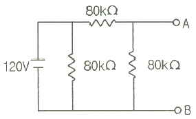
- 20
- 40
- 60
- 80
(정답률: 61%)
22. 부궤환 증폭기의 장점에 해당되는 것은?
- 전력이 절약된다.
- 안정도가 증진된다.
- 증폭도가 증가된다.
- 능률이 증대된다.
(정답률: 68%)
23. 전기기기에서 생기는 손실 중 권선의 저항에 의하여 생기는 손실은?
- 철손
- 동손
- 포유부하손
- 히스테리시스손
(정답률: 76%)
24. 그림과 같은 무접점회로는 어떤 논리회로인가?
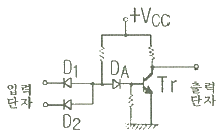
- NOR
- OR
- NAND
- AND
(정답률: 75%)
25. 열감지기의 온도감지용으로 사용하는 소자는?
- 서미스터
- 바리스터
- 제너다이오드
- 발광다이오드
(정답률: 86%)
26. 그림과 같은 회로에서 각 계기의 지시값이 Ⓥ는 180V, Ⓐ는 5A, W는 720W 라면 이 회로의 무효전력(Var)은?
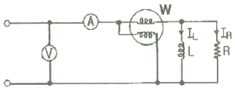
- 480
- 540
- 960
- 1200
(정답률: 59%)
27. 정현파 신호 sin t 의 전달함수는?
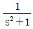
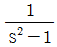
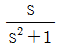
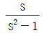
(정답률: 67%)
28. 제어량이 압력, 온도 및 유량 등과 같은 공업량일 경우의 제어는?
- 시퀀스제어
- 프로세스제어
- 추종제어
- 프로그램제어
(정답률: 78%)
29. SCR를 턴온시킨 후 게이트 전류를 0으로 하여도 온(ON)상태를 유지하기 위한 최소의 애노드 전류를 무엇이라 하는가?
- 래칭전류
- 스텐드온전류
- 최대전류
- 순시전류
(정답률: 76%)
30. 인덕턴스가 1H인 코일과 정전용량이 0.2μF인 콘덴서를 직렬로 접속할 때 이 회로의 공진주파수는 약 몇 Hz인가?
- 89
- 178
- 267
- 356
(정답률: 53%)
31. 단상 반파정류회로에서 교류 실효값 220V를 정류하면 직류 평균전압은 약 몇 V인가? (단, 정류기의 전압강하는 무시한다.)
- 58
- 73
- 88
- 99
(정답률: 57%)
32. 논리식
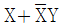
를 간단히 하면?- X
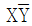
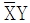
- X+Y
(정답률: 67%)
33. 온도 t℃에서 저항이 R1, R2이고 저항의 온도계수가 각각 α1, α2 인 두 개의 저항을 직렬로 접속했을 때 합성저항 온도계수는?
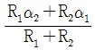
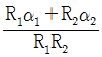
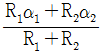
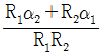
(정답률: 60%)
34. 단상전력을 간접적으로 측정하기 위해 3전압계법을 사용하는 경우 단상 교류전력 P(W)는?
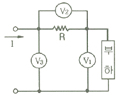
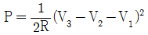
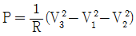
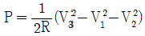
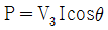
(정답률: 75%)
35. 그림과 같은 RL직렬회로에서 소비되는 전력은 몇 W 인가?
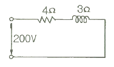
- 6400
- 8800
- 10000
- 12000
(정답률: 57%)
36. 선간전압 E(V)의 3상 평형전원에 대칭 3상 저항부하 R(Ω)이 그림과 같이 접속되었을 때 a, b 두 상간에 접속된 전력계의 지시값이 W(W)라면 C상의 전류는?
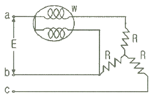
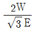
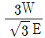
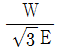
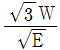
(정답률: 68%)
37. 교류전력변환장치로 사용되는 인버터회로에 대한 설명으로 옳지 않은 것은?
- 직류 전력을 교류 전력으로 변환하는 장치를 인버터라고 한다.
- 전류형 인버터와 전압형 인버터로 구분할 수 있다.
- 전류방식에 따라서 타려식과 자려식으로 구분할 수 있다.
- 인버터의 부하장치에는 직류직권전동기를 사용할 수 있다.
(정답률: 67%)
38. 다이오드를 사용한 정류회로에서 과전압방지를 위한 대책으로 가장 알맞은 것은?
- 다이오드를 직렬로 추가한다.
- 다이오드를 병렬로 추가한다.
- 다이오드의 양단에 적당한 값의 저항을 추가한다.
- 다이오드의 양단에 적당한 값의 콘덴서를 추가한다.
(정답률: 64%)
39. 이미터 전류를 1mA 증가시켰더니 컬렉터 전류는 0.98mA 증가되었다. 이 트랜지스터의 증폭률 β는?
- 4.9
- 9.8
- 49.0
- 98.0
(정답률: 48%)
40. 저항이 4Ω, 인덕턴스가 8mH인 코일을 직렬로 연결하고 100V, 60Hz 인 전압을 공급할 때 유효전력은 약 몇 kW 인가?
- 0.8
- 1.2
- 1.6
- 2.0
(정답률: 48%)
3과목: 소방관계법규
41. 소방본부장 또는 소방서장은 건축허가등의 동의요구 서류를 접수한 날부터 최대 며칠 이내에 건축허가등의 동의여부를 회신하여야 하는가? (단, 허가 신청한 건축물은 지상으로부터 높이가 200m인 아파트이다.)
- 5일
- 7일
- 10일
- 15일
(정답률: 62%)
42. 소방기본법령상 소방활동구역의 출입자에 해당되지 않는 자는?
- 소방활동구역 안에 있는 소방대상물의 소유자·관리자 또는 점유자
- 전기·가스·수도·통신·교통의 업무에 종사하는 사람으로서 원활한 소방활동을 위하여 필요한 자
- 화재건물과 관련 있는 부동산업자
- 취재인력 등 보도업무에 종사하는 자
(정답률: 82%)
43. 소방기본법상 화재 현상에서의 피난 등을 체험할 수 있는 소방체험관의 설립·운영권자는?
- 시·도지사
- 행정안전부장관
- 소방본부장 또는 소방서장
- 소방청장
(정답률: 79%)
44. 산화성고체인 제1류 위험물에 해당되는 것은?
- 질산염류
- 특수인화물
- 과염소산
- 유기과산화물
(정답률: 71%)
45. 소방시설관리업자가 기술인력을 변경하는 경우, 시·도지사에게 제출하여야 하는 서류로 틀린 것은?
- 소방시설관리업 등록수첩
- 변경된 기술인력의 기술자격증(자격수첩)
- 기술인력 연명부
- 사업자등록증 사본
(정답률: 71%)
46. 소방대라 함은 화재를 진압하고 화재, 재난·재해 그 밖의 위급한 상황에서 구조·구급 활동 등을 하기 위하여 구성된 조직체를 말한다. 소방대의 구성원으로 틀린 것은?
- 소방공무원
- 소방안전관리원
- 의무소방원
- 의용소방대원
(정답률: 77%)
47. 소방기본법령상 인접하고 있는 시·도간 소방업무의 상호응원협정을 체결하고자 할 때, 포함되어야 하는 사항으로 틀린 것은?
- 소방교육·훈련의 종류에 관한 사항
- 화재의 경계·진압활동에 관한 사항
- 출동대원의 수당·식사 및 피복의 수선의 소요경비의 부담에 관한 사항
- 화재조사활동에 관한 사항
(정답률: 61%)
48. 화재예방, 소방시설 설치·유지 및 안전관리에 관한 법령상 건축허가등의 동의를 요구한 기관이 그 건축허가등을 취소하였을 때, 취소한 날부터 최대 며칠 이내에 건축물 등의 시공지 또는 소재지를 관할하는 소방본부장 또는 소방서장에게 그 사실을 통보하여야 하는가?
- 3일
- 4일
- 7일
- 10일
(정답률: 57%)
49. 다음 중 300만원 이하의 벌금에 해당되지 않는 것은?(문제 오류로 실제 시험에서는 1,2번이 정답처리 되었습니다. 여기서는 1번을 누르면 정답 처리 됩니다.)
- 등록수첩을 다른 자에게 빌려준 자
- 소방시설공사의 완공검사를 받지 아니한 자
- 소방기술자가 동시에 둘 이상의 업체에 취업한 사람
- 소방시설공사 현장에 감리원을 배치하지 아니한 자
(정답률: 75%)
50. 화재예방, 소방시설 설치·유지 및 안전관리에 관한 법령상 특정소방대상물 중 오피스텔은 어느 시설에 해당하는가?
- 숙박시설
- 일반업무시설
- 공동주택
- 근린생활시설
(정답률: 83%)
51. 화재예방, 소방시설 설치·유지 및 안전관리에 관한 법령상, 종사자 수가 5명이고, 숙박시설이 모두 2인용 침대이며 침대수량은 50개인 청소년 시설에서 수용인원은 몇 명인가?
- 55
- 75
- 85
- 1⑤
(정답률: 84%)
52. 다음 중 고급기술자에 해당하는 학력·경력 기준으로 옳은 것은?
- 박사학위를 취득한 후 2년 이상 소방 관련 업무를 수행한 사람
- 석사학위를 취득한 후 6년 이상 소방 관련 업무를 수행한 사람
- 학사학위를 취득한 후 8년 이상 소방 관련 업무를 수행한 사람
- 고등학교를 졸업후 후 10년 이상 소방 관련 업무를 수행한 사람
(정답률: 64%)
53. 지정수량의 최소 몇 배 이상의 위험물을 취급하는 제조소에는 피뢰침을 설치해야 하는가? (단, 제6류 위험물을 취급하는 위험물제조소는 제외하고, 제조소 주위의 상황에 따라 안전상 지장이 없는 경우도 제외한다.)
- 5배
- 10배
- 50배
- 100배
(정답률: 77%)
54. 소방특별조사 결과 소방대상물의 위치·구조·설비 또는 관리의 상황이 화재나 재난·재해 예방을 위하여 보완될 필요가 있거나 화재가 발생하면 인명 또는 재산의 피해가 클 것으로 예상되는 때에 관계인에게 그 소방대상물의 개수·이전·제거, 사용의 금지 또는 제한, 사용폐쇄, 공사의 정지 또는 중지, 그 밖의 필요한 조치를 명할 수 있는 자로 틀린 것은?
- 시·도지사
- 소방서장
- 소방청장
- 소방본부장
(정답률: 74%)
55. 다음 중 품질이 우수하다고 인정되는 소방용품에 대하여 우수품질인증을 할 수 있는 자는?
- 산업통상자원부장관
- 시·도지사
- 소방청장
- 소방본부장 또는 소방서장
(정답률: 68%)
56. 소방기본법령상 위험물 또는 물건의 보관기간은 소방본부 또는 소방서의 게시판에 공고하는 기간의 종료일 다음 날부터 며칠로 하는가?
- 3일
- 5일
- 7일
- 14일
(정답률: 68%)
57. 화재예방, 소방시설 설치·유지 및 안전관리에 관한 법령상 둘 이상의 특정소방대상물이 내화구조로 된 연결통로가 벽이 없는 구조로서 그 길이가 몇 m 이하인 경우 하나의 소방대상물로 보는가?
- 6
- 9
- 10
- 12
(정답률: 51%)
58. 제4류 위험물을 저장·취급하는 제조소에 “화기엄금”이란 주의사항을 표시하는 게시판을 설치할 경우 게시판의 색상은?
- 청색바탕에 백색문자
- 적색바탕에 백색문자
- 백색바탕에 적색문자
- 백색바탕에 흑색문자
(정답률: 65%)
59. 소방시설을 구분하는 경우 소화설비에 해당되지 않는 것은?
- 스프링클러설비
- 제연설비
- 자동확산소화기
- 옥외소화전설비
(정답률: 77%)
60. 위험물안전관리법상 청문을 실시하여 처분해야 하는 것은?
- 제조소등 설치허가의 취소
- 제조소등 영업정지 처분
- 탱크시험자의 영업정지 처분
- 과징금 부과 처분
(정답률: 71%)
4과목: 소방전기시설의 구조 및 원리
61. 무선통신보조설비의 증폭기에는 비상전원이 부착된 것으로 하고 비상전원의 용량은 무선통신보조설비를 유효하게 몇 분 이상 작동시킬 수 있는 것이어야 하는가?
- 10분
- 20분
- 30분
- 40분
(정답률: 67%)
62. 비상방송설비의 배선에 대한 설치기준으로 틀린 것은?
- 배선은 다른 용도의 전선과 동일한 관, 덕트, 몰드 또는 풀박스 등에 설치할 것
- 전원회로의 배선은 옥내소화전설비의 화재안전기준에 따른 내화배선으로 설치할 것
- 화재로 인하여 하나의 층의 확성기 또는 배선이 단락 또는 단선되어도 다른 층의 화재통보에 지장이 없도록 할 것
- 부속회로의 전로와 대지 사이 및 배선 상호간의 절연저항은 1경계구역마다 직류 250V의 절연저항측정기를 사용하여 측정한 절연저항이 0.1MΩ 이상이 되도록 할 것
(정답률: 76%)
63. 비상콘센트설비의 설치기준으로 틀린 것은?
- 개폐기에는 “비상콘센트”라고 표시한 표지를 할 것
- 하나의 전용회로에 설치하는 비상콘센트는 10개 이하로 할 것
- 비상전원을 실내에 설치하는 때에는 그 실내에 비상조명등을 설치할 것
- 비상전원은 비상콘센트설비를 유효하게 10분 이상 작동시킬 수 있는 용량으로 할 것
(정답률: 72%)
64. 비상전원이 비상조명등을 60분 이상 유효하게 작동시킬 수 있는 용량으로 하지 않아도 되는 특정소방대상물은?
- 지하상가
- 숙박시설
- 무장층으로서 용도가 소매시장
- 지하층을 제외한 층수가 11층 이상의 층
(정답률: 62%)
65. 일국소의 주위온도가 일정한 온도 이상이 되는 경우에 작동하는 것으로서 외관이 전선으로 되어 있는 감지기는 어떤 것인가?
- 공기흡입형
- 광전식분리형
- 차동식스포트형
- 정온식감지선형
(정답률: 81%)
66. 비상콘센트를 보호하기 위한 비상콘센트 보호함의 설치기준으로 틀린 것은?
- 비상콘센트 보호함에는 쉽게 개폐할 수 있는 문을 설치하여야 한다.
- 비상콘센트 보호함 상부에 적색의 표시등을 설치하여야 한다.
- 비상콘센트 보호함에는 그 내부에 “비상콘센트”라고 표시한 표식을 하여야 한다.
- 비상콘센트 보호함을 옥내소화전함 등과 접속하여 설치하는 경우에는 옥내소화전함 등의 표시등과 겸용할 수 있다.
(정답률: 63%)
67. 소방회로용의 것으로 수전설비, 변전설비 그 밖의 기기 및 배선을 금속제 외함에 수납한 것으로 정의되는 것은?
- 전용분전반
- 공용분전반
- 공용큐비클식
- 전용큐비클식
(정답률: 66%)
68. 비상방송설비 음향장치에 대한 설치기준으로 옳은 것은?
- 다른 전기회로에 따라 유도장애가 생기지 않도록 한다.
- 음량조정기를 설치하는 경우 음량조정기의 배선은 2선식으로 한다.
- 다른 방송설비와 공용하는 것에 있어서는 화재 시 비상경보 외의 방송을 차단되는 구조가 아니어야 한다.
- 기동장치에 따른 화재신고를 수신한 후 필요한 음량으로 화재발생 상황 및 피난에 유효한 방송이 자동으로 개시될 때까지의 소요시간은 60초 이하로 한다.
(정답률: 69%)
69. 객석 내의 통로의 직선부분의 길이가 85m 이다. 객석유도등을 몇 개 설치하여야 하는가?
- 17개
- 19개
- 21개
- 22개
(정답률: 69%)
70. 자동화재탐지설비의 감지기회로에 설치하는 종단저항의 설치기준으로 틀린 것은?
- 감지기회로 끝부분에 설치한다.
- 점검 및 관리가 쉬운 장소에 설치하아여 한다.
- 전용함에 설치하는 경우 그 설치 높이는 바닥으로부터 0.8m 이내에 설치하여야 한다.
- 종단감지기에 설치할 경우에는 구별이 쉽도록 해당감지기의 기판 및 감지기 외부 등에 별도의 표시를 하여야 한다.
(정답률: 80%)
71. 비상경보설비의 축전지설비의 구조에 대한 설명으로 틀린 것은?
- 예비전원을 병렬로 접속하는 경우에는 역충전 방지 등의 조치를 하여야 한다.
- 내부에 주전원의 양극을 동시에 개폐할 수 있는 전원스위치를 설치하여야 한다.
- 축전지설비는 접지전극에 교류전류를 통하는 회로방식을 사용하여서는 아니된다.
- 예비전원은 축전지설비용 예비전원과 외부부하 공급용 예비전원을 별도로 설치하여야 한다.
(정답률: 61%)
72. 신호의 전송로가 분기되는 장소에 설치하는 것으로 임피던스 매칭과 신호 균등분배를 위해 사용되는 장치는?
- 혼합기
- 분배기
- 증폭기
- 분파기
(정답률: 83%)
73. 부착높이 3m, 바닥면적 50m2인 주요구조부를 내화구조로한 소방대상물에 1종 열반도체식 차동식분포형감지기를 설치하고자 할 때 감지부의 최소 설치개수는?
- 1개
- 2개
- 3개
- 4개
(정답률: 45%)
74. 3선식 배선에 따라 상시 충전되는 유도등의 전기회로에 점멸기를 설치하는 경우 유도등이 점등되어야 할 경우로 관계없는 것은?
- 제연설비가 작동한 때
- 자동소화설비가 작동한 때
- 비상경보설비의 발신기가 작동한 때
- 자동화재탐지설비의 감지기가 작동한 때
(정답률: 63%)
75. 누전경보기의 전원은 분전반으로부터 전용회로로 하고 각 극에 개폐기와 몇 A 이하의 과전류차단기를 설치하여야 하는가?
- 15
- 20
- 25
- 30
(정답률: 69%)
76. 자동화재속보설비의 설치기준으로 틀린 것은?
- 조작스위치는 바닥으로부터 0.8m 이상 1.5m 이하의 높이에 설치한다.
- 비상경보설비와 연동으로 작동하여 자동적으로 화재발생 상황을 소방관서에 전달하도록 한다.
- 속보기는 소방관서에 통신망으로 통보하도록 하며, 데이터 또는 코드전송방식을 부가적으로 설치할 수 있다.
- 속보기는 소방청장이 정하여 고시한 「자동화재속보설비의 속보기의 성능인증 및 제품검사의 기술기준」에 적합한 것으로 설치하여야 한다.
(정답률: 58%)
77. 다음 비상경보설비 및 비상방송설비에 사용되는 용어 설명 중 틀린 것은?
- 비상벨설비라 함은 화재발생 상황을 경종으로 경보하는 설비를 말한다.
- 증폭기라 함은 전압전류의 주파수를 늘려 감도를 좋게 하고 소리를 크게 하는 장치를 말한다.
- 확성기라 함은 소리를 크게 하여 멀리까지 전달될 수 있도록 하는 장치로써 일명 스피커를 말한다.
- 음량조절기라 함은 가변저항을 이용하여 전류를 변화시켜 음량을 크게 하거나 작게 조절할 수 있는 장치를 말한다.
(정답률: 74%)
78. 다음 ( ) 안에 들어갈 내용으로 옳은 것은?
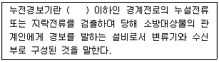
- 사용전압 220 V
- 사용전압 380 V
- 사용전압 600 V
- 사용전압 750 V
(정답률: 64%)
79. 부착높이가 11m 인 장소에 적응성 있는 감지기는?
- 차동식분포형
- 정온식스포트형
- 차동식스포트형
- 정온식감지선형
(정답률: 47%)
80. 비상콘센트설비 상용전원회로의 배선이 고압수전 또는 특고압수전인 경우의 설치기준은?
- 인입개폐기의 직전에서 분기하여 전용배선으로 할 것
- 인입개폐기의 직후에서 분기하여 전용배선으로 할 것
- 전력용변압기 1차측의 주차단기 2차측에서 분기하여 전용배선으로 할 것
- 전력용변압기 2차측의 주차단기 1차측 또는 2차측에서 분기하여 전용배선으로 할 것
(정답률: 49%)
- 화원: 화재가 발생하면 가장 먼저 연기와 열이 발생하는 구간입니다.
- 무염착화: 연소체와 산소가 충분히 혼합되어 연소가 일어나는 상태입니다. 이 단계에서는 아직 불꽃이 나지 않습니다.
- 발염착화: 무염착화 상태에서 연소체와 산소가 충분히 혼합되면 불꽃이 발생하며, 연소가 더욱 활발해집니다.
- 출화: 발염착화 상태에서 연소체가 불꽃에 의해 연소되면서 열과 가스가 방출되는 상태입니다. 이 단계에서는 이미 화재가 큰 규모로 발생한 것입니다.
- 최성기: 출화 상태에서 화재가 최대 규모에 도달하는 단계입니다. 이 단계에서는 화재가 더 이상 확대되지 않고, 일정한 크기를 유지합니다.
- 소화: 최성기 이후에는 화재가 진압되어 소화되는 단계입니다. 이 단계에서는 불꽃이 꺼지고, 연기와 열도 점차 감소합니다.
따라서, "화원-무염착화-발염착화-출화-최성기-소화"가 옳은 답입니다.